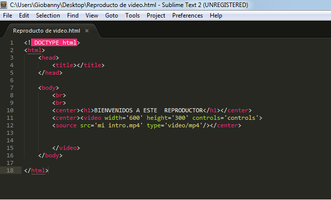

VIDEOS
Aunque el código HTML5 para la inserción de vídeo directamente en HTML5 es muy sencillo, todavía tiene un único inconveniente. No todos los navegadores aceptan todos los formatos de vídeo existentes. De hecho de los 3 estándares existentes, el único navegador que los acepta a todos es Chrome.
EJEMPLO:
La tabla de los diferentes formatos de vídeo aceptados por los diferentes navegadores queda así:
poder controlar mejor el video, como son:
- width:Indica la anchura del vídeo, expresada en píxeles (px) o en porcentaje (%)
- height:Indica la altura del vídeo, expresada en píxeles (px) o en porcentaje (%)
- controls:Establece si tendrá la barra de navegación (play, stop, volumen...) o no
- autoplay:Indica si el vídeo se inicia detenido o ya aparece por defecto reproduciéndose
- loop:Establece si al acabar el vídeo, éste debe volver a empezar o no
- muted:Indica si el audio se reproduce o se reproduce sin audio
- preload:Indica si el vídeo se empieza a cargar cuando el navegador carga la página html
- poster:Da la posibilidad de establecer una imagen (jpg, gif o png) como fotograma inicial del video
EJEMPLO 2:
